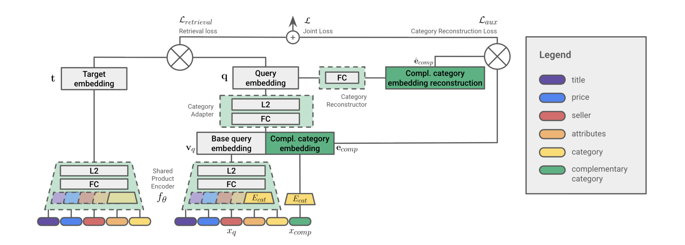
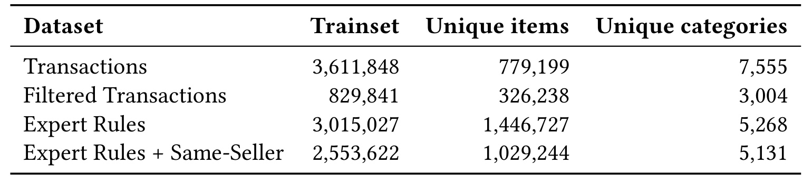
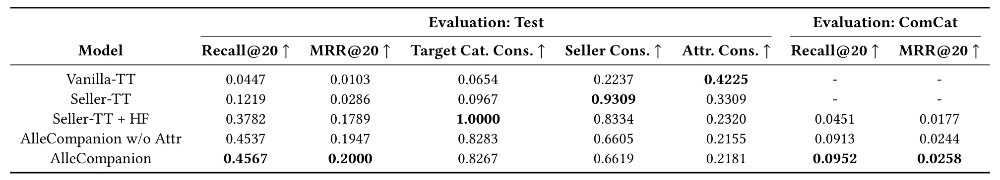
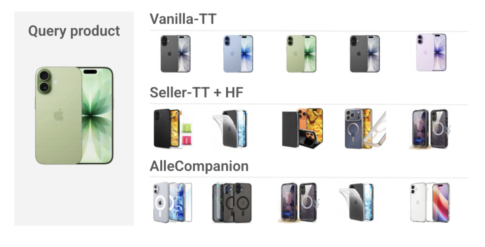
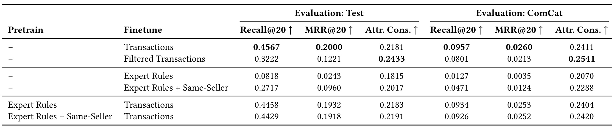
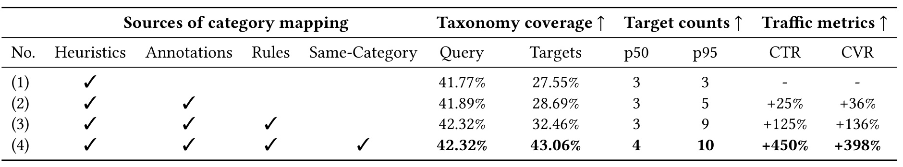
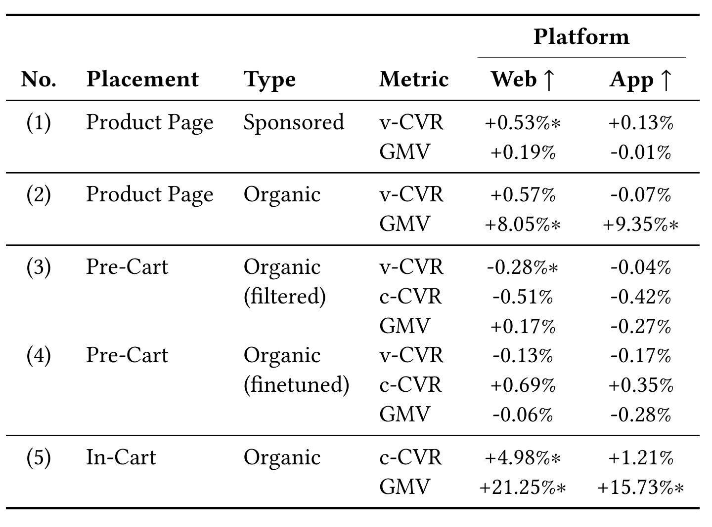

Allegro-AlleCompanion：从共购信号到受类别约束的互补商品召回
论文：Beyond Co-purchase Relation: Evolution of Complementary Recommendations at Allegro
作者：Aleksandra Osowska-Kurczab、Klaudia Nazarko、Eliška Kosturová、Lidia Wojciechowska、Michał Bień
机构：Allegro；Michał Bień 现署名 NVIDIA，工作在 Allegro 完成。
公开时间：2026-09-04，arXiv v1；精读日期：2026-09-09。
论文入口：arXiv:2609.05063。
代码/项目页：已检查摘要页与 PDF 链接，本轮未核验到本文独立公开代码或项目页。PDF 自述为 RecSys 2026 论文，但 DOI 仍为占位符，不据此生成正式 DOI 链接。
证据范围：以下数值来自作者原文与原始图表；没有独立复现训练或线上实验。
AlleCompanion 把“应该检索哪一类商品”和“这一类里的哪个商品与当前商品适配”拆开：前者由可维护的 ComCat 类别映射决定，后者由带 Category Adapter 的共享双塔学习。论文最有价值的生产结论是，兼容性清洗、互补语义与购物行为优化之间存在真实取舍；最强的有机 GMV 收益使用了包含同类别替代品的映射。
购物车里一起出现的商品可能是替代品、不同需求或偶然搭配；仅拟合共购日志难以同时保证有向互补、商品型号兼容和足量召回。作者试图用类别条件查询与可独立更新的多源映射纠正这种偏差，同时保留真实交易分布中的有效需求。
1. 背景和问题
互补推荐服务的购物阶段与相似商品推荐不同。用户浏览一台手机时，另一种颜色的手机可以帮助比较和挑选；用户决定购买后，更可能需要保护壳、充电器或者耳机。但“用户接下来还会买什么”仍比配件关系更宽：家庭采购可能同时包含猫粮和狗粮，同一次交易也可能购买多种口味的同类食品。日志把这些商品统一记录为共购，业务却需要区分替代、功能补充与独立需求。AlleCompanion 将任务定义为商品到商品的关系，其中目标商品在功能上扩展查询商品；这个定义要求模型认识商品组合的作用，而不只是判断两段标题是否语义接近。
真正的兼容性还要深入到商品实例。手机与手机壳在类别层面构成合理关系，然而摄像头数量、型号、尺寸不同，保护壳就可能不能使用。同样，镜头是否适配相机依赖接口，充电器是否合适依赖规格。只有类别正确不能证明使用正确，而完全追求属性相同又会偏向替代品：另一台手机可能比任何保护壳都具有更多相同特征。论文因此同时讨论检索相关性、目标类别一致性和属性一致性，避免把单一相似度当成互补能力。这里的属性一致性只是匹配特征的平均重合比例，是技术兼容性的代理量，不等价于逐件经过规则或实物验证的可用率。
关系的方向也不能忽略。买手机会触发购买保护壳的需求，但买保护壳不意味着应该再买一台手机。对称地统计两个商品的共现会丢失这种因果上并不充分、业务上却很重要的先后关系。作者在样本构造阶段保留会话中的购买顺序，在类别映射中同样存储有向关系，让查询端的需求可以指向多个目标类别。本文的共享商品编码器并不会使整个检索过程重新对称，因为查询向量还要接收目标类别条件，而目标商品向量没有这条相同的适配路径。训练的方向性与查询结构的不对称共同服务于这一任务定义。
Allegro 的平台条件使问题更具体。作者描述平台每月有超过两千万活跃买家、超过十五万卖家和大规模商品目录；商品上下架快，长尾商品缺少充分交互。只依赖商品标识或稳定的共购边，容易让新增商品长期处于冷启动状态。以标题、价格、层次类别和商品属性为输入的内容双塔，可以在商品具有特征时直接编码。另一方面，平台免邮门槛鼓励用户从同一卖家购买多件商品，同卖家关系同时影响历史交易分布和推荐位的业务资格。把这种因素加入模型，不只是增添一个预测特征，也在编码当地履约政策塑造的需求。
既有研究已经尝试从噪声共购中分离互补关系，例如利用共同浏览识别替代品、加入替代关系惩罚、通过知识图谱表达兼容属性，或者用大模型提供常识及标注。模型结构上也有图神经网络、序列模型和多模态混合表示。作者并不声称这些方法没有效果，而是强调高吞吐生产检索还要满足推理开销、更新频率和维护复杂度。本文选择在双塔框架中加入有限的类别适配与辅助目标，并把专家知识留在可维护映射层。其技术新意更偏向对数据、模型和策略职责的重新划分，而不是发布一种通用大模型或一个更深的召回网络。
后置硬过滤提供了直接但昂贵的解决办法：先取大量候选，再删除类别或卖家不符合要求的商品。问题在于，无条件召回生成的候选已经偏向相似商品，后面过滤无法恢复一开始没有召回的兼容配件。作者的对照中，为获得目标二十个结果，先生成三百个候选，最终保留数的中位数却只有七个。这个证据说明，提高过滤精度会以结果稀疏为代价。类别条件查询则在生成阶段改变检索方向，试图让候选池从一开始就更符合意图，从而减少无效过采样与后续淘汰。
但类别条件模型也带来一个训练与部署之间的缺口。训练时知道用户最终购买了什么，自然知道目标类别；在线面对一件查询商品时，这个答案不存在。若离线永远使用真实目标类别，会把“猜用户需要哪类东西”的难题提前解决，造成看起来很高的召回率。ComCat 正是为此提供一组可用目标类别，整篇论文因此把使用真实目标类别的 Test 和使用映射类别的 ComCat 分开汇报。二者不是可以混合比较的两列同义指标，前者更接近条件检索能力，后者额外承受意图映射与多类别分配带来的不确定性。
理解本文还需要区分研究目标和推荐位目标。研究名称强调互补推荐，线上有机轮播位却可能是在邀请用户继续挑选同一卖家的商品以达到免邮门槛。此时纯配件关系可能过窄，同类别替代品或更多同类商品同样满足发现需求。作者允许 ComCat 加入类别到自身的映射，并在实验后接受混合相关商品策略。这个调整并不让前面的互补建模失去意义，但会改变收益归因：混合策略的销售额提升不能直接宣称为“识别互补关系更准确”的商业回报。把业务场景、映射配置和实验指标一并记录，才是这篇生产论文值得长期保留的读法。
此外，目录关系的维护是一项长期运营问题。专家会修正规格、类目会拆分合并，新商品也可能使用旧分类不能区分的接口。若把这些关系全部固化进训练样本，每次政策变化都要等待模型重训，并且难以判断新效果来自参数更新还是知识纠错。本文将映射保留为独立对象，提供了可追溯的更新单元；这也是其与单纯增加一项类别特征的双塔模型不同的地方。
2. 方法
2.1 类别条件双塔与重建目标
基础双塔把查询商品和候选商品编码到同一个空间，训练目标拉近真实共购的有序商品对。两塔共享 Product Encoder 参数，作者认为这有利于收敛和数值稳定。各个输入特征先经过各自的嵌入表，再拼接进入全连接网络，最后做二范数归一化。基础输入包括标题、价格和层次类别，后续变体加入卖家标识与细粒度商品属性。商品本身不依靠商品标识建立专属向量，因而可为具有内容特征的新商品计算表示；这里“内容模型”不意味着没有离散标识，卖家标识确实是正式模型的重要特征。
符号解释：$x_q$ 是查询商品特征，$f_{\theta}$ 是两塔共享的商品编码器，$\mathbf v_q$ 是基础查询向量；$x_{\mathrm{comp}}$ 是请求的目标互补类别，$E_{\mathrm{cat}}$ 是商品编码器共享的类别嵌入表，$\mathbf e_{\mathrm{comp}}$ 是该类别向量；$\Vert$ 表示拼接，$W$ 与 $\mathbf b$ 是适配层权重和偏置，$\operatorname{Norm}$ 是归一化，$\mathbf q$ 是用于召回的最终查询向量。类别条件改变查询在向量空间里的位置，例如同一部手机在请求保护壳与请求充电器时得到不同查询。训练时目标类别来自真实目标商品，部署时来自 ComCat。它是学习到的类别引导，不能把公式读作保证所有结果都属于目标类别的硬约束。

Figure 1 左侧是候选商品的目标向量，中央是查询商品经过共享编码器得到的基础表示，绿色类别向量在中央进入 Category Adapter。向上看，查询最终向量与目标向量参与检索损失，查询向量又经过独立的全连接层去重建绿色类别表示，两条损失支路在顶部合并。右侧图例对应标题、价格、卖家、属性和类别，不应把颜色误当成另外的多模态编码器。图中目标塔没有查询端的适配器，这使同一批候选向量可以预先计算，而查询根据需要接收不同目标类别；共享参数与非对称查询功能同时成立。底部绿色输入在训练时可由真实目标类别提供，在线则必须由外部映射提供，因此图里的训练便利条件不会自动成为线上可得信息。辅助重建支路还说明，作者希望类别信号在最终查询向量里保持可辨识性，而不是被强大的商品内容或卖家关联完全淹没。该结构图本身没有给出类别严格命中的数学保证，这一点要由后面的类别一致性数据检验。
符号解释：$\widehat{\mathbf e}_{\mathrm{comp}}$ 是由查询向量重建出的类别表示，$W_{\mathrm{aux}}$ 和 $\mathbf b_{\mathrm{aux}}$ 是辅助全连接层参数；$\mathcal L_{\mathrm{retrieval}}$ 是商品检索损失，$\mathcal L_{\mathrm{aux}}$ 是类别重建损失，$\mathcal L$ 是两者相加的总目标。原文对两条任务都使用 sampled softmax 描述，对主检索还说明混合负采样和温度缩放，但没有展开完整采样分布、温度值与校正公式，所以这里保留论文显式目标，不补造训练配方。辅助任务对齐重建表示与真实类别嵌入，促使查询向量携带请求类别信息；它不是对每件候选商品做专家规则判定，细粒度型号兼容仍主要依靠输入属性和学习到的关联。
2.2 有向共购样本与行为清洗
训练数据来自同一用户短时间窗口内的购买序列。作者首先选择能平衡多样性与语义关系的会话窗口，再从序列提取有序样本。只限同购物车容易产生重复或相似商品，适度扩大窗口可带来更多商品种类，窗口过长则混入相互独立的采购。论文说窗口通过保留集调参选择，没有披露一个可直接照搬的固定小时数，因此复现时不能默认它等于自然日或一次购物车会话。具体的有向配对形式如下。
符号解释：$S$ 是一个用户在选定时间窗口内按购买次序排列的会话，$i_j$ 是第 $j$ 个商品，$n$ 是会话长度，$\mathcal P(S)$ 是该会话产生的训练商品对集合，$j<k$ 保留先买与后买的方向。原文以有序对描述这一步，上式只是完整写出同一集合定义，并不额外引入因果标签。先买手机后买保护壳是合理监督，但仅有时间顺序不能排除独立需求，后续清洗才负责减少这类噪声。排除购买量超过百分之九十九分位的重度买家，可以降低批量或异常采购对训练分布的支配。
清洗利用商品对频次以及所属部门和类别。作者对四百个共购商品对做内部标注，每对要求两名标注者达成一致，将关系分为互补、替代、无关。提高最低共购频次把无关关系从约百分之四十四降到百分之二十二，却也使替代关系从百分之二十八升到百分之四十三，互补关系只从约百分之二十九升到百分之三十六。这说明频繁共购并不天然更“功能互补”。另一个类别对齐实验要求两件商品属于同一部门但不同类别，得到互补百分之六十一、替代百分之四、无关百分之三十五，而该实验的基线分别是三十六、十六、四十八。两组起点不同，不应拼成一个连续漏斗。测试集应用同样的清洗规则，但不应用最低商品对频次阈值，以保留更广的真实流量。专家规则可以进一步约束型号等属性，不过论文把它作为数据变体检验，最终没有假定清洗越严格越好。
2.3 ComCat 多源类别关系与在线召回
ComCat 为每个查询类别提供有向目标类别集合，来源按可信程度合并。自动共购启发式从购买会话挖掘类别关系，使用 Jaccard 相似度抑制全局热门类别主导，再按分类树距离、周期性信号和价格比等过滤偶然关联。人机协同来源既包括清洗后的购买商品对，也包括大模型辅助提出的互补概念，专家对商品对判断互补、替代或无关，再把互补标注汇聚到类别层。专家规则来源则利用细粒度商品参数建立高精度关系，汇总为类别映射，可以脱离历史购买流量提供知识。大模型在这里服务于知识发现与标注流程，论文没有描述在线为每次请求调用大模型生成商品列表。
三个来源采用人工评估确定的优先级：人工标注优先，其次是专家规则，最后是自动启发式兜底。它们不是一个公开可复现的学习式融合权重网络，原文也没有给出每条冲突映射的完整裁决算法。将类别到自身的边加入映射后，同一个模型可以同时召回互补品和替代品；这项策略开关对后面的线上结果至关重要。类别政策被保存在 ComCat，商品适配能力保存在召回模型；类别关系发生改变时，可以更新映射而不重新训练整个模型。这种解耦提升策略维护的灵活性，但不能绕过模型对新目标类别的表示质量，也不能解决分类体系本身没有表达出来的型号差异。
在线系统仍采用常规向量检索。作者周期性地在单张 NVIDIA T4 16GB 上重训，使用 Faiss 建立近似最近邻索引并每日更新；对查询商品，先查可用目标类别，再分别产生类别条件查询和候选组，最后交错混排以增加轮播位多样性。AlleCompanion 与协同过滤召回并行工作，并由类别热销等启发式补足覆盖。有机轮播位还应用同卖家业务限制，这与模型离线的卖家一致性不是同一层含义。论文声称满足毫秒级服务要求，但没有独立的延迟表、分位耗时、吞吐曲线或训练时长，因此只能确认使用了可部署的向量检索范式，不能推导具体速度收益。规则动态更新、商品索引刷新、模型重训分别有不同职责和更新节奏，应当在迁移时分别监控。
3. 实验结果
3.1 数据规模与评测协议
离线训练使用九十天购买记录，测试使用随后七天的保留集，保持时间分离。各架构使用同一组独立调参得到的超参数，优化器为 AdamW，包含温度缩放和混合负采样。Test 场景给出真实目标类别，ComCat 场景使用生成的映射来模拟线上缺少目标类别的情况。标准相关性指标是 Recall@20 和 MRR@20，前者考察目标能否进入前二十个候选，后者额外关注命中位置。目标类别一致性计算候选中属于请求类别的比例，卖家一致性计算与查询商品来自同一卖家的比例，属性一致性计算匹配属性的平均重合比例。它们衡量的性质不同，不能互相替代。

Table 2 给出四种训练数据的完整规模。原始交易经基础清洗后仍有 3,611,848 个训练样本、779,199 个商品和 7,555 个类别；叠加严格专家兼容规则后，只剩 829,841 个样本、326,238 个商品和 3,004 个类别。作者把样本减少概括为约百分之七十七，而类别与商品覆盖也同步下降，因此随后观察到的召回下降同时包含监督分布收窄和覆盖减少，不能全部解释成“专家知识无效”。纯 Expert Rules 通过规则合成 3,015,027 个样本，覆盖 1,446,727 个商品与 5,268 类；额外要求同卖家后为 2,553,622 个样本、1,029,244 件商品、5,131 类。合成版本商品数超过交易版本，仍不意味着它更接近真实购买意图，因为生成关系满足技术规则，却未必具有相同的购买频率、价格偏好和卖家履约分布。对这张表的正确使用方式，是把规模变化作为后续性能消融的背景变量，而不是把行数越多当作训练数据质量越高的证据。
还可以沿着表中的三个数量列分别检查训练变化。交易过滤后的商品覆盖从七十七万余件降到三十二万余件，类别覆盖从七千余类降到三千余类；这意味着模型不仅少看一些关系，也不再接触许多商品及类别，后续在原交易测试集上掉点并不能单独归因于规则内容。规则合成的样本总量与交易集相近，却覆盖约一百四十四万件商品，比交易集更多，说明两个集合的每件商品监督密度也可能不同；表中没有逐商品频次分布，不能进一步认定哪一集合更均衡。增加同卖家条件后，合成样本从三百零一万余对降到二百五十五万余对，独立商品也减少，类别数量却只从五千二百六十八降到五千一百三十一。可见该条件主要重新筛选可形成合单的商品关系，而没有同等幅度地移除整个类别，这与它用于对齐平台履约需求的目的相符。
3.2 召回架构与兼容案例
模型对照包含基础 Vanilla-TT、加入卖家特征的 Seller-TT、带后置硬过滤的 Seller-TT + HF，以及有无商品属性的 AlleCompanion。硬过滤基线生成三百个候选后再处理，论文描述其用途为约束目标互补类别与卖家，表中最终类别一致性达到一。测试共购对中百分之五十九来自同一卖家，这解释了卖家特征为什么能显著改善历史购买预测，也提醒读者这种效果依赖平台分布。

Table 1 中，Vanilla-TT 的 Test Recall@20 为 0.0447，加入卖家特征后提高到 0.1219，卖家一致性也从 0.2237 提高到 0.9309。硬过滤版本的 Recall@20 达到 0.3782、MRR@20 为 0.1789、目标类别一致性为 1.0000，但过采样十五倍后有效候选数的中位数只有七，说明其精确过滤伴随着候选不足。没有细粒度属性的 AlleCompanion 已达到 0.4537 与 0.1947，完整版本达到 0.4567 与 0.2000。完整版本相对硬过滤召回率的增量是 0.0785，按两者比值计算约为百分之二十点八的相对提升；这不能说成绝对提高百分之二十点八。完整版本的目标类别一致性 0.8267 低于硬过滤的一，卖家一致性 0.6619 也低于 Seller-TT 和硬过滤基线，因而该模型主要改善可用召回与排序相关性，未在所有约束指标上占优。属性从不使用到使用时，一致性从 0.2155 到 0.2181，提升有限；最强的整体架构收益不能全部归因于属性输入。ComCat 评估下完整模型 Recall@20 只有 0.0952、MRR@20 为 0.0258，虽然超过硬过滤的 0.0451 与 0.0177，却远低于给真实目标类别的结果，暴露出类别意图不确定性带来的难度。
再比较完整模型和不含属性的版本，可以看到改进并非所有列同向：目标类别一致性从约百分之八十二点八三略降至百分之八十二点六七，卖家一致性从百分之六十六点零五略升至百分之六十六点一九，检索命中的排序指标也只是由零点一九四七提高到零点二。这里更稳妥的结论是属性提供了额外的商品判别信息，而不能说它令类别约束更严格。使用映射类别评测时，不含属性版本的召回为零点零九一三、倒数排名均值为零点零二四四，完整版本分别提高到零点零九五二、零点零二五八，方向与真实类别评测一致。但两种评测都没有提供多次训练方差，也没有对这些差值标注显著性。真实类别评测把目标意图作为条件输入，而映射评测要分配多个可能类别，后者还受候选组织方式影响；它们之间的大落差只能说明在线近似条件更难，不能据此精确测量映射层单独损失了多少相关性。

Figure 2 使用作者给出的 iPhone 17 查询与手机壳目标类别，分别展示三种模型的推荐列表。最上方的 Vanilla-TT 返回的仍然是手机，颜色和存储配置变化没有改变其替代品性质；中间的 Seller-TT + HF 已经检索到手机壳，但包括针对 iPhone 17 Pro 的壳，三摄开孔与查询商品的双摄要求存在差异；最下方的 AlleCompanion 提供了作者认定适配查询型号的多样手机壳。这个案例把“类别对”与“实例兼容”两层错误拆得很清楚，也解释为什么一味提高属性重合会偏向相似商品。基础双塔的属性一致性实际上最高，达到 0.4225，完整模型只有约百分之二十一点八，但作者指出真实保留集共购关系的属性一致性约为百分之二十一。由此可以说模型的属性重合率更接近跨类别购买分布，不能说低重合本身证明配件可用。案例只有一个查询，图示商品是否严格适配仍依赖作者描述，不能把视觉上合理的一排手机壳当成大规模兼容率验证。迁移时应额外准备型号、接口与尺寸的人工标注集。
3.3 训练数据消融：技术精确度与购买分布

Table 3 最直接的结论是，基础交易训练在两种评估口径下仍然具有最好的 Recall@20 和 MRR@20。Test 中严格过滤训练的召回从 0.4567 降到 0.3222，MRR 从 0.2000 降到 0.1221，但属性一致性由 0.2181 提高至 0.2433；这是技术规则改善某种代理质量同时牺牲行为命中的明确信号。纯专家规则更弱，Test Recall@20 为 0.0818，ComCat 下仅 0.0127；加同卖家限制后分别改善到 0.2717 与 0.0471，仍落后交易训练。这说明生成可兼容商品对，不等于恢复用户真正会买的商品组合，同卖家分布又确实对当前业务重要。先用专家规则预训练再用交易微调，可以恢复到 0.4458；使用同卖家专家预训练后微调为 0.4429。两者都接近但没有超过 0.4567，属性一致性分别是 0.2183 和 0.2191，只比交易基线小幅增加。表中没有置信区间或显著性检验，不能把这些很小的属性差异宣传为稳定提升。ComCat 对应交易基线在本表写成 Recall@20 0.0957、MRR@20 0.0260，与 Table 1 的 0.0952、0.0258 存在原文小差异；此处按各表分别引用，作者没有说明差异原因，不自行平均或统一成某个数。
这组消融支持“让真实交易继续承担模型训练，让专家知识更多承担类别策略”的工程选择，但论证边界仍需保留。专家过滤不仅改变标注质量，还减少样本和商品类别，所以目前对照无法分离纯度、数据规模与覆盖的独立效应。纯合成数据与交易数据的流行度和卖家分布也不同，不能概括成所有知识增强预训练都会失败。更合理的后续实验是在同等样本预算、同等商品覆盖下逐步改变规则比例，或者把兼容性作为加权目标而非删除样本的二元门槛；这些是基于现有证据提出的研究方案，论文尚未实现。
3.4 ComCat 映射消融：覆盖目录与覆盖流量

Table 4 是商品页有机轮播位历史流量上的离线评估，不能当成线上随机实验。仅启发式映射覆盖百分之四十一点七七的查询类别、百分之二十七点五五的目标类别，目标类别数的中位数和百分之九十五分位都为三。加入人工标注后，查询覆盖几乎不变，但尾部目标类别数升至五，回放口径 CTR、CVR 相对基线分别增加百分之二十五、三十六；再加专家规则，目标覆盖达到百分之三十二点四六，尾部目标数为九，流量指标增量为百分之一百二十五和一百三十六。最后加入同类别关系后，目标覆盖达到百分之四十三点零六，中位目标数为四，尾部为十，CTR 和 CVR 相对增量达到百分之四百五十与三百九十八。最后一行的大幅增长同时改变了任务：候选现在允许同类别替代品，所以不能把全部增量归功于互补知识变准。四种映射的查询类别覆盖始终只有约百分之四十二，作者却报告它对应百分之九十九点八的实际流量，反映热门需求高度集中；这不意味着剩余过半目录类别的冷启动难题已解决。表中没有绝对 CTR、CVR，也没有置信区间，不能把相对增长换算成某个确定的点击率或成交率。
类别映射实验与商品召回实验的评估对象还不同。前者使用已知查询商品以及历史共购、共同点击的类别构建流量数据，考察映射是否覆盖发生过的需求；后者还必须从大规模商品库找到具体目标商品。前者的较高流量覆盖不能直接抵消后者从 Test 到 ComCat 的召回落差，也不能用历史生产日志完全评估未曝光过的类别组合。它提供的是策略候选池与当前流量的适配证据。尤其当同类关系加入之后，原推荐位可能本来就积累大量替代品点击，回放数据将受到旧系统曝光机制影响；作者最后也承认离线多商品意图评估存在反馈循环。
3.5 线上 A/B：正向收益依赖推荐位和映射配置
作者分别在 Web（桌面与移动网页）和 App 上做两周实验，每个实验覆盖平台全部流量范围，AlleCompanion 作为额外召回源加入现有生产系统。论文没有披露实验组比例、样本数或完整置信区间。所有有机轮播位只允许同卖家商品，以服务订单免邮门槛。v-CVR 是产生购买的访问占比，c-CVR 是产生购买的轮播点击占比，GMV 是直接归因到轮播交互的商品交易额。Table 5 给出相对生产基线的变化，星号表示显著性阈值 $p<0.005$；其 GMV 不应被扩大解释为平台总 GMV。

Table 5 首先表明，纯互补的商品页广告位在 Web 上 v-CVR 提高 0.53% 且显著，App 提高 0.13% 未标显著；两端 GMV 分别为 +0.19% 和 -0.01%，均未标显著。正文另报告该广告轮播位两端广告收入约增加百分之五十，并将其联系到 CTR 改善，这不是表中的 GMV 数值，也不能扩大到所有广告收入。商品页有机轮播位使用加入同类别关系的互补加替代混合策略，Web、App 归因 GMV 分别提升 8.05%、9.35%，均显著；v-CVR 为 +0.57%、-0.07%，均未标显著。购物车内轮播位同样使用同类别映射，Web、App GMV 分别提高 21.25%、15.73%，均显著，c-CVR 为 +4.98%（显著）与 +1.21%（未标显著）。因此最醒目的有机收入结果来自更宽的相关商品发现，且依赖同卖家合单、免邮门槛和所处购买阶段。它们不能被统一归因为纯互补召回，更不能把三个位置的相对增量相加得到全平台收益。
预购物车弹窗是必须保留的失败结果。Filtered Transactions 版本在 Web 上 v-CVR 下降 0.28% 且显著，App 为 -0.04% 未标显著；c-CVR 两端分别 -0.51%、-0.42%，GMV 为 +0.17%、-0.27%，这些均未标显著。预训练后微调的版本 v-CVR 为 -0.13%、-0.17%，c-CVR 为 +0.69%、+0.35%，GMV 为 -0.06%、-0.28%，也都未标显著。作者另外试过同类别映射策略，在该弹窗同样没有令人满意的核心业务改善；表格只量化列出上述 filtered 和 finetuned 两个版本，不能补造另一个完整数值行。这个场景清楚说明，较高的离线属性一致性并未转化为更好的线上体验或成交，同一种同类补充策略也不能跨购买阶段稳定奏效。
作者根据商品页广告、有机商品页和购物车内三个场景的至少一项主指标、至少一个平台显著正向且其他指标未见负向影响的结果，部署了这三个位置；没有声称预购物车失败配置也上线成功。生产基线在购物车相关场景包括购买协同过滤、同卖家热销与重复购买召回，实验是“在这些来源之上增加新召回”的系统测试，而不是把全系统换成一个双塔的孤立算法实验。论文没有候选覆盖、延迟、收入归因窗口与各路召回贡献拆解，因此线上结果证明该组合在作者场景有业务价值，无法单独识别 Adapter、ComCat、商品属性或轮播混排各自贡献了多少。
4. 总结
4.1 研究判断与可迁移设计
我认为本文最值得借鉴的是知识进入系统的位置。作者没有把所有专家规则压成训练数据的强制门槛，而是先验证严格清洗造成的分布损失，再把高精度知识集中放到可更新的类别映射层。双塔负责从真实交易中保留购买规律，映射负责表达可控的类别意图，查询适配器把二者连接起来。这条路线适合已有内容召回能力、但后置过滤严重损失候选的平台。它所解决的是召回生成阶段缺乏目标方向的问题；如果业务真正瓶颈是错误的型号属性、缺失的商品分类或履约状态，单独增加适配器并不能修复输入事实。
迁移到电商推荐时，可以先对现有共购对做关系标注，估计替代、互补和无关关系的比例，再统计不同召回数量下硬过滤后的有效候选数。这样能够判断类别条件召回的必要性，而不是直接追求复刻模型名。映射版本应记录来源、方向、业务位、是否允许同类关系和更新时间，并与模型版本分开回滚。广告推荐则还要区分商家收益、广告收入、访问转化和归因成交额，避免只因一个轮播位点击更高就认定用户整体价值更高。以上是从论文结构和结果推导的迁移建议，本文没有在广告排序预估、竞价或通用内容推荐上做验证。
4.2 三项局限与后续核验
第一，类别知识的分辨率限制了可表达意图。约百分之四十二目录类别覆盖对应百分之九十九点八流量，说明现有高流量场景覆盖充分，但不证明极长尾类别和新类目都可用。类别映射只能限定候选的大方向，属性重合指标也没有完整衡量型号、尺寸与接口兼容。未来需要按类目、人群和冷启动程度进行人工兼容性评估，同时区分“目录里从未存在的关系”和“有关系但没有足够训练商品”两种失败。
第二，当前主要是商品到商品的广义召回与交错混排，用户个性化、整个购物篮的多商品约束以及购买阶段意图尚未被充分建模。预购物车弹窗的显著负结果尤其提示，单个查询商品不足以解释用户是否愿意继续浏览。同一个保护壳推荐在刚完成选择与即将提交订单时可能产生不同作用；这只是合理机制假设，论文并未提供用户研究证明。后续可以把阶段和现有购物篮作为条件，并单独检验增加替代品是否引入重复选择负担。
第三，公开证据仍受生产日志与披露粒度约束。离线目标来自已有交易和点击，容易继承旧推荐系统的曝光偏差；线上实验虽持续两周并标显著性，却没有公开样本量、完整方差、长期留存、退货或投诉指标。训练会话窗口、负采样细节、索引参数和端到端延迟也不足以支持精确复现。目前能确认的是作者报告了多个生产位的增量价值和一个重要负结果，而不是该方法在任意平台都有相同幅度的回报。
后续跟进应聚焦三个可证伪问题：在固定样本量与覆盖下，严格兼容规则究竟影响了监督质量还是只是删掉有效需求；在同样召回预算下，把类别适配器、类别重建损失和商品属性分别移除会损失多少；在明确区分互补、替代与混合的线上随机实验中，各自是否改善用户满意度及长期购买，而不仅是短期轮播归因交易额。本文主表将适配器与辅助损失作为整体对照，尚不能给出二者的独立效应。若未来开放实现或补充这些对照，它才更容易从生产经验转化为跨平台可检验的方法结论。